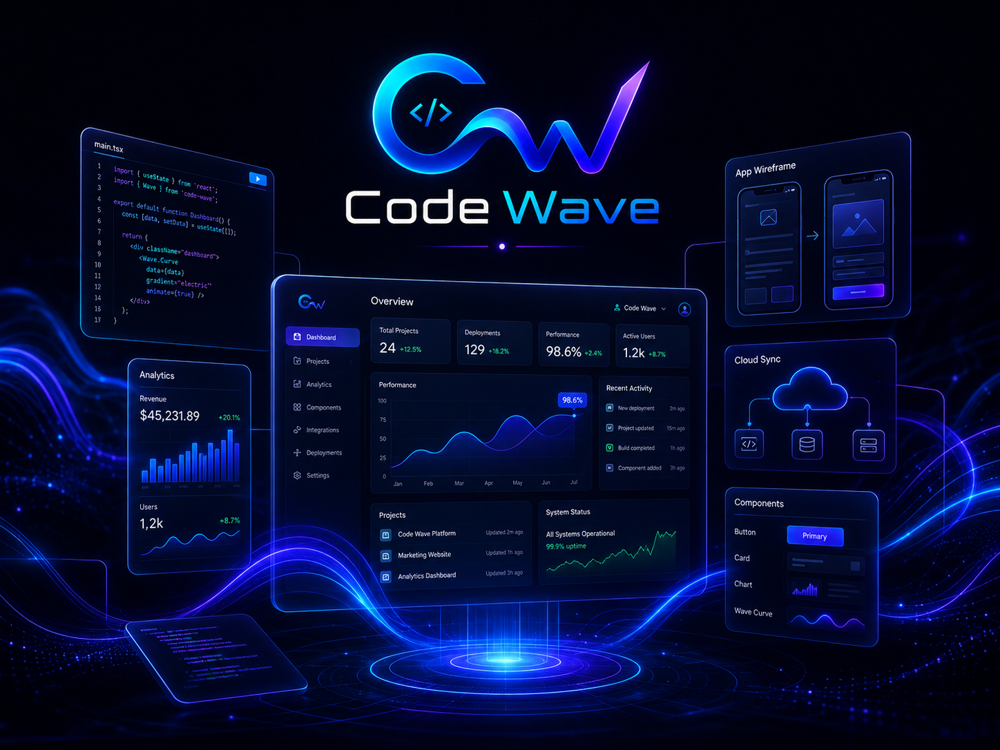
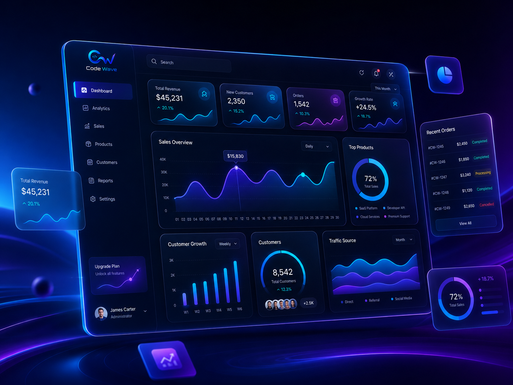
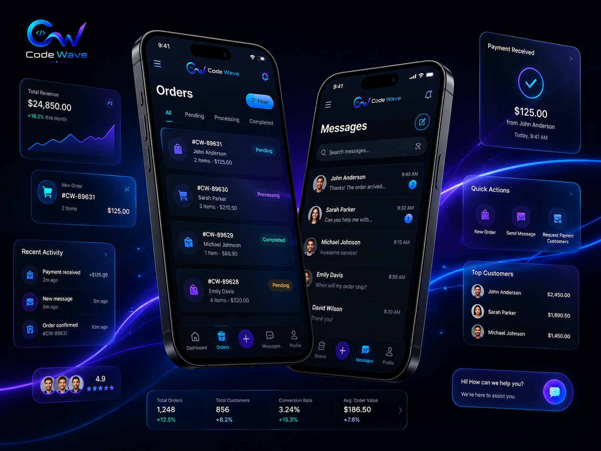
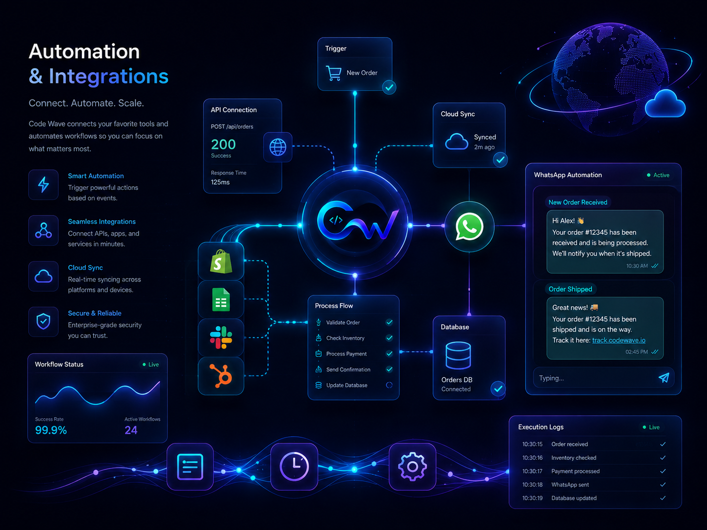

Desenvolvimento profissional para empresas que querem crescer
Mais autoridade
Visual moderno para transmitir confiança no primeiro contato.
Mais conversão
CTAs e argumentos pensados para gerar conversas.
Mais escala
Sistemas e integrações para reduzir trabalho manual.
Sua empresa com site, sistema e automação que passam confiança e geram oportunidades todos os dias.
Criamos landing pages, sistemas web, dashboards e automações com IA para transformar presença digital em vendas, atendimento e operação.
Diagnóstico rápido
Design premium
Responsivo
Pronto para tráfego pago

Landing Pages
Sistemas Web
Aplicativos
Dashboards
Integrações
Automações
IA para negócios
E-commerce
O problema
Site fraco e processo manual custam oportunidades.
Soluções
Estrutura digital para vender, atender e operar melhor.
Do site ao sistema, entregamos interfaces modernas, responsivas e alinhadas ao objetivo comercial.
Sites & Landing Pages
Páginas rápidas para divulgar serviços, captar leads e receber tráfego pago.
Sistemas & Dashboards
Painéis, CRMs e áreas administrativas para organizar a operação.
Apps & Experiências Mobile
Interfaces modernas para atendimento, pedidos e gestão pelo celular.
IA & Automação
Integrações com WhatsApp, planilhas, APIs e assistentes inteligentes.
Pacotes comerciais
Pacotes objetivos para cada momento do negócio.
Cada entrega é ajustada ao escopo, à prioridade comercial e ao nível de integração necessário.
Presença Digital
Landing Page Premium
Para empresas que precisam de uma página bonita, profissional e pronta para receber anúncios.
- Design responsivo premium
- Botões de WhatsApp e formulário
- Estrutura pronta para conversão
Mais procurado
Operação Digital
Sistema Web Sob Medida
Para negócios que precisam controlar clientes, pedidos, processos, equipe ou dados em um painel próprio.
- Painel administrativo
- Cadastro, edição e relatórios
- Login, permissões e integrações
Escala & Produtividade
Automação + IA
Para empresas que querem economizar tempo, automatizar tarefas e melhorar atendimento com tecnologia.
- Fluxos com WhatsApp e APIs
- Integrações com planilhas e CRM
- Assistentes e respostas inteligentes
Demonstrações premium
Possibilidades visuais para produtos digitais.
Três frentes comuns para transformar ideia, operação ou atendimento em interface profissional.
Dashboard
Gestão, métricas e controle operacional
Painéis, CRMs e plataformas internas com informação organizada.
- Indicadores e relatórios
- Área administrativa sob medida

Mobile
Aplicativos, pedidos e relacionamento
Experiências mobile para atendimento, pedidos e acesso rápido.
- Pedidos e mensagens
- Interface mobile-first

Automation
Fluxos conectados por APIs e WhatsApp
Automação para reduzir repetição e conectar ferramentas.
- Planilhas, CRM e APIs
- Alertas e sincronização

Projetos e experiências
Trabalhos, estudos e produtos digitais.
Projetos organizados por tipo de solução, com demonstrações visuais de produtos digitais em desenvolvimento.
Como funciona
Da ideia à publicação em quatro etapas.
Diagnóstico
Objetivo, público e escopo.
Estratégia
Estrutura, prioridade e conteúdo.
Design & Código
Interface responsiva e funcional.
Entrega
Testes, publicação e orientação.
Dúvidas frequentes
Dúvidas comuns antes de contratar.
Respostas diretas para entender o escopo inicial.
Vocês fazem apenas landing page ou sistema completo?
Fazemos desde uma landing page profissional até sistemas web, dashboards, aplicativos, lojas virtuais, integrações e automações.
A landing page fica pronta para anúncios?
Sim. A estrutura pode ser preparada para tráfego pago, com CTAs, benefícios, formulário e botão direto para WhatsApp.
É possível integrar WhatsApp, planilhas ou CRM?
Sim. Podemos criar fluxos com WhatsApp, planilhas, APIs, sistemas internos e ferramentas de venda ou atendimento.
Pronto para começar?
Chamar no WhatsApp
Peça agora uma análise rápida do projeto que você quer criar.
Envie uma mensagem no WhatsApp e conte se você precisa de landing page, sistema, app, automação ou IA para sua empresa.
Contato
Conte para a Code Wave o que você quer construir.
Use o formulário ou chame direto no WhatsApp. Quanto mais contexto você enviar, mais objetivo fica o diagnóstico inicial.
thiago.b.j.carvalho@gmail.com
WhatsApp: (61) 98285-9870
Atendimento comercial: segunda a sexta, 9h às 18h